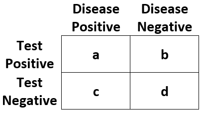

Test Consequences
a formula with the outcome on the LHS and a sum of markers/covariates to test on the RHS
a data frame containing the variables in formula=.
Character vector with statistics to return. See below for details
vector of threshold probabilities between 0 and 1.
Default is seq(0, 0.99, by = 0.01). Thresholds at zero are replaced
with 10e-10.
named list of variable labels, e.g. list(age = "Age, years")
if outcome is survival, time= specifies the time the
assessment is made
When NULL, the prevalence is estimated from data=.
If the data passed is a case-control set, the population prevalence
may be set with this argument.
a tibble with test consequences
The following diagnostic statistics are available to return.

| Statistic | Abbreviation | Definition |
| Outcome Positive Rate | "pos_rate" | (a + c) / (a + b + c + d) |
| Outcome Negative Rate | "neg_rate" | (b + d) / (a + b + c + d) |
| Test Positive Rate | "test_pos_rate" | (a + b) / (a + b + c + d) |
| Test Negative Rate | "test_neg_rate" | (c + d) / (a + b + c + d) |
| True Positive Rate | "tp_rate" | a / (a + b + c + d) |
| False Positive Rate | "fp_rate" | b / (a + b + c + d) |
| False Negative Rate | "fn_rate" | c / (a + b + c + d) |
| True Negative Rate | "tn_rate" | d / (a + b + c + d) |
| Positive Predictive Value | "ppv" | a / (a + b) |
| Negative Predictive Value | "npv" | d / (c + d) |
| Sensitivity | "sens" | a / (a + c) |
| Specificity | "spec" | d / (b + d) |
| Positive Likelihood Ratio | "lr_pos" | sens / (1 - spec) |
| Negative Likelihood Ratio | "lr_neg" | (1 - sens) / spec |
test_consequences(cancer ~ cancerpredmarker, data = df_binary)
#> # A tibble: 5 × 18
#> variable label n threshold pos_rate neg_rate test_pos_rate test_neg_rate
#> <chr> <fct> <int> <dbl> <dbl> <dbl> <dbl> <dbl>
#> 1 cancerpre… canc… 750 0 0.14 0.86 1 0
#> 2 cancerpre… canc… 750 0.25 0.14 0.86 0.192 0.808
#> 3 cancerpre… canc… 750 0.5 0.14 0.86 0.0667 0.933
#> 4 cancerpre… canc… 750 0.75 0.14 0.86 0.0187 0.981
#> 5 cancerpre… canc… 750 1 0.14 0.86 0 1
#> # ℹ 10 more variables: tp_rate <dbl>, fp_rate <dbl>, fn_rate <dbl>,
#> # tn_rate <dbl>, ppv <dbl>, npv <dbl>, sens <dbl>, spec <dbl>, lr_pos <dbl>,
#> # lr_neg <dbl>